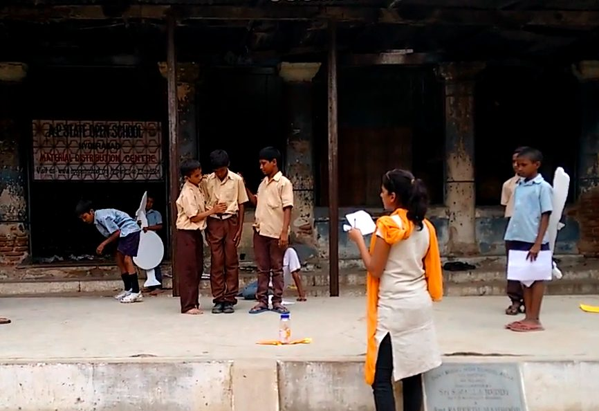

San Francisco Bay Area
I turn grants, corporate partnerships and technology into programs that open doors for people.
I've led education, ed-tech, digital skills and workforce programs, from Teach For India classrooms to the International Rescue Committee, with city governments, corporate partners and funders. Today I also build with AI.
Worked with International Rescue Committee · Teach For India · City of San José · Deloitte · placement partners including Amazon, Uber, DoorDash, Walmart, Bloom Energy, HSBC and PepsiCo
From code to classrooms to communities.
I started out writing software, then traded it for a classroom of 400 students. Since then, I've spent my career on the receiving side of grants, corporate partnerships and donated technology, building education, digital skills and workforce programs in the US and India, and with education nonprofits in Africa.
Read my storyWhat I bring
- I know the grantee experience from the inside. Having stewarded grants, public contracts and corporate partnerships through full grant cycles, I bring a practitioner's lens to due diligence, learning and grantee partnership: what strengthens organizations, what burdens them, and what produces lasting outcomes.
- From proof of concept to systems change. I've built programs from a blank page and taken them to scale, from a pilot adopted by state government to an ed-tech platform used across five school districts. I know what it takes for catalytic funding to outlast the first grant.
- Technology that lands with communities. A computer science engineer by training, I've built ed-tech, led digital skills training and steered donated technology into classrooms and workforce programs, pairing tools with the training that drives adoption. Today I build multi-agent AI tools, bringing a practitioner's view to responsible AI for economic opportunity.
- A bridge across sectors and communities. I've brought together government, corporate partners, funders and families, and I keep the voices of communities directly affected at the center of decisions. I translate between these worlds so partners can act on shared goals.
What I've learned building programs

When the rules changed mid-year, I went to our funders first
At the International Rescue Committee in San José, a state policy change shrank who qualified for our refugee workforce program. I went to our funders early, with evidence and revised targets. Funding doubled.
Read the story
Building ed-tech that 35,000 children actually used
Most ed-tech fails in the classroom, not in the code. I led product and curriculum for a K–3 learning platform built around how children learn, and onboarded schools until it was adopted across five school districts.

Reaching them 20 years sooner
As the first hire on a disability-inclusion pilot, I built the team, worked with Deloitte as our funding and design partner, and grew the program from one school to a state government order.

The student who almost dropped out, and the path that led him to NASA
A 17-year-old in a seventh-grade classroom, torn between his family's immediate needs and his own long-term potential. He stayed, and his path led to NASA.
More about me

My story
How a volunteer afternoon in a classroom set the course for my work.
Read my storyHow I work
- Go where the work is. Before I plan anything, I sit with the people it's for.
- Find the one thing in the way. Fix that, and the rest starts to move.
- Tell partners early. Especially when the news isn't good.
- Speak the listener's language. Government officials, CSR leaders, product teams and families each need to hear why it matters to them.
Kora Impact helps nonprofits and early-stage foundations design programs and bring AI into their daily work, safely and practically.
Trained through Anthropic's AI Fluency for Nonprofits, built with GivingTuesday.
- AI adoption for nonprofit teamsTraining staff to use AI on real work, from grant reports to case notes, with client data kept private.
- Program design and launchFrom idea to a pilot that works, and from a pilot to scale.
- AI and digital skills curriculaPrograms nonprofits can run for their own communities.
- Funder reporting and grant readinessGetting your outcomes, data and story ready for funders.
- Impact storytellingTurning program results into stories people remember.
Let's talk
Open to full-time program and social impact roles, and to select consulting projects through Kora Impact.